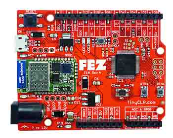

FEZ

FEZ is the official TinyCLR OS board and reference design. Its port, called FEZCLR, has the latest and greatest software, and should be used as a reference for starting new ports. � Find Hardware resources and other 3rd party software on the FEZ hardware page
FEZ includes the GHI Electronics bootloader for making software update easier. The board comes pre-loaded with the loader. In case you erased the board and want to reload the bootloader, you can download it here. To load the bootloader file onto FEZ, use the DFU tools as explained here
Using TinyCLR OS
This requires loading the GHI Bootloader v2 and the FEZCLR firmware. �
Loading Bootloader v2
The loader comes loaded by default and does not need to be updated. However, if the loader was erased and needs to be loaded:
- Download and save the bootloader file.
- Press and hold BOOT0 button while resetting the FEZ.
- Follow the instructions for Uploading DFU Files.
Loading the Firmware
- Press and hold the BTN1 button down while resetting the board.
- Download the FEZCLR firmware and follow Loading the Firmware steps.